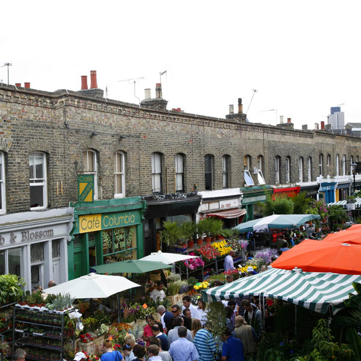

I want to go catch a movie on the weekend or after work that is not too expensive! Any recommendations?
One cinema springs to mind. Genesis cinema on Whitechapel Street, a cosy little Cinema with 3 reasonably sized screens. Tickets are usally £8 - unless you fancy the luxury experience with sofas for £10! Amazingly, every Monday and Wednesday all tickets are £4.50 !
It also has a bar, does great pizza and hosts a variety of cool film events and festivals throughout the year.
Are there any good art galleries in East London worth a visit?
In east London, the streets from something of an art gallery. Walk down bricklane and witness fabulous murals and near to the Truman brewery . You'll find this pair of abandoned cars. They've been there for years. The upper one is a 2008 piece by D*Face. The lower, pink car was decorated by Banksy a year or two before.

An Art Gallery worth visiting is Chisenhale Gallery Located off Roman road in Bethnal Green. It displays work of current artists and hosts talks and film events throughout the month.
I want to buy some flowers for my flat, any nice outdoor markets that I could go to?
There is one place in London that is sure to meet your needs! One of London’s most visually appealing markets, Columbia Road overflows with bucketfuls of beautiful flowers every Sunday. There are bulbs, herbs, shrubs and bedding plants too. Alongside the Sunday market you’ll find a host of independent galleries and shops selling pottery, perfume and the like – many of them are only open at the weekends, and they often shut up shop with the market at 3pm. Turn up as early as humanly possible if you want to guarantee yourself the pick of the crop. Things start winding down at 2pm.

Where is good to see live jazz?
At the Vortex in Dalston you will find a great selection of music played most nights of the week. As well as attracting great Jazz musicians from across the world, the Vortex is also run entirely by volunteers.
Where is good to see live jazz?
At the Vortex in Dalston you will find a great selection of music played most nights of the week. As well as attracting great Jazz musicians from across the world, the Vortex is also run entirely by volunteers.
If you’re after something more off the record, head to the Haggerston pub (438 Kingsland Road) on a Sunday night where they have a very lively jazz session kicking off at 11.30pm. Expect the unexpected!